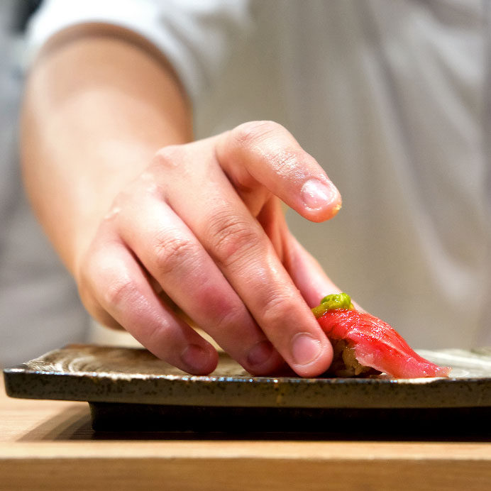
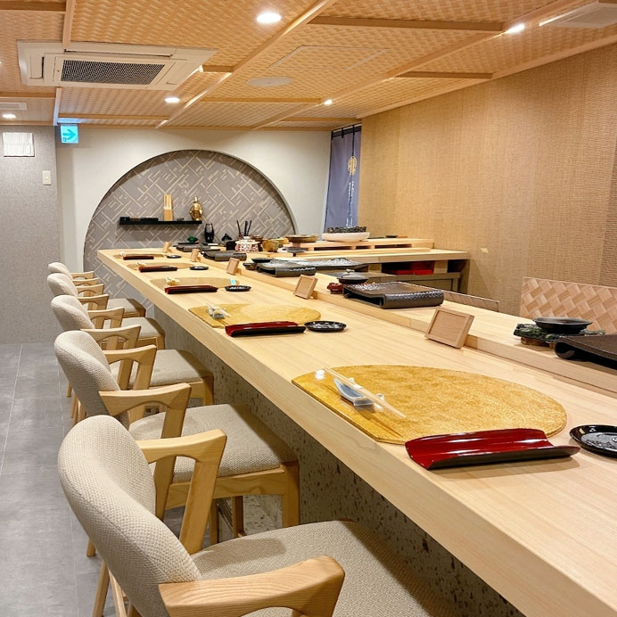

鮨し禅について
東心斎橋の路地にある、カウンター10席の鮨店です。
旬の食材を、おまかせで静かに味わっていただきます。

鮨し禅の想い
鮨し禅が目指すのは、華美な演出ではなく、削ぎ落とした先にだけ宿る本質の美です。
一貫の温度、口へ運ぶまでの間、香りの立ち上がり、余韻の消え方。
そのすべてが静かに調和してこそ、鮨は深く心に残るものになると考えています。
道頓堀という街の賑わいの中にありながら、店内に一歩足を踏み入れた瞬間、空気がやわらぎ、心が整っていく。
鮨し禅は、そんな静けさを味わっていただくための場所です。
喧騒からわずかに距離を置き、落ち着いた会話とともに鮨を味わい、酒を傾ける。
その何気ないひとときが、かけがえのない時間になるよう、一席一席を丁寧に整えています。
私たちが大切にしているのは、素材そのものの力を見極め、職人の手仕事によってその魅力を最も美しく引き出すこと。
過度に飾ることなく、しかし細部に一切妥協せず、器、所作、間、空間に至るまで、静かな緊張感をもって積み重ねる。
そうして生まれる一貫には、派手さでは語れない品格が宿ると信じています。
鮨し禅は、ただ食事をするための店ではありません。
鮨と酒を愉しみながら、感覚を澄ませ、心をほどき、自分自身を静かに満たしていく。
この場所で過ごす時間そのものが、上質であること。
それこそが、鮨し禅の目指すもてなしです。